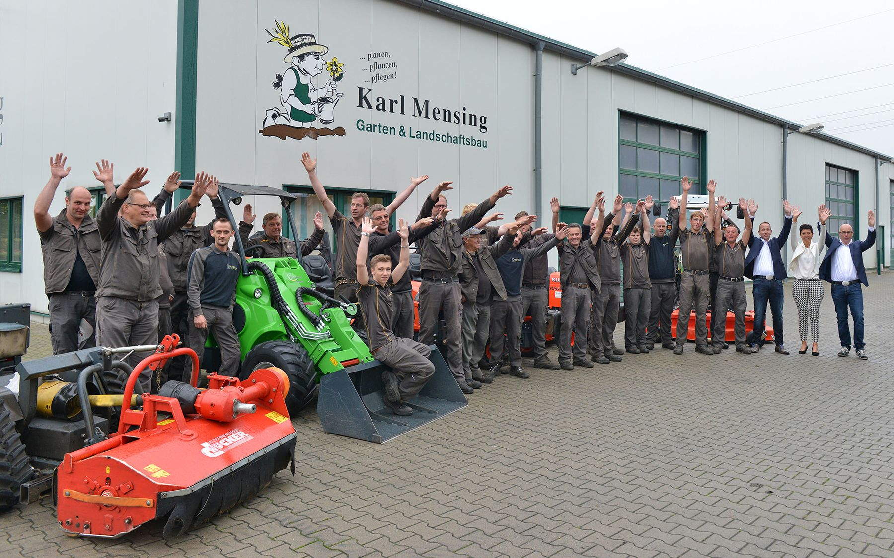

planen. pflanzen. pflegen. Garten- und Landschaftsbau Karl Mensing
Garten- und Landschaftsbau aus Heek-Nienborg. Seit 1952 in Familienhand, heute mit 40 Leuten, eigenem Maschinenpark und einer Inklusionsabteilung.
Unsere Leistungen
Von der Beratung vor Ort bis zur fertigen Fläche: alles aus einer Hand, mit eigenen Leuten und eigenen Maschinen.
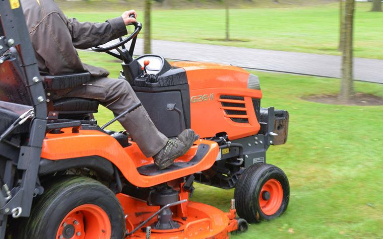
Gartenpflege
Gehölzschnitt, Grünflächen, Wildkraut ohne Herbizide, Spielplatzkontrolle, Boden
FLL-Baumkontrolle
Regelkontrolle durch zertifizierten Baumkontrolleur
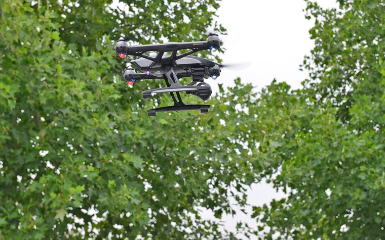
Luftbildaufnahmen
Für Gebäude, Industrie und Ortschaften, mit eigener Drohne
Forstarbeiten
Baumfällung, Rodung, Baumpflege, Waldpflege
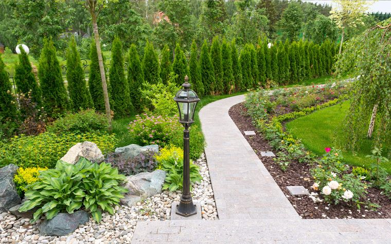
Pflasterarbeiten
Einfahrten, Terrassen, Wege und Parkplätze, Natur- oder Betonstein
Herstellung von Rasenflächen
Fertigrasen und Einsaaten, fast das ganze Jahr
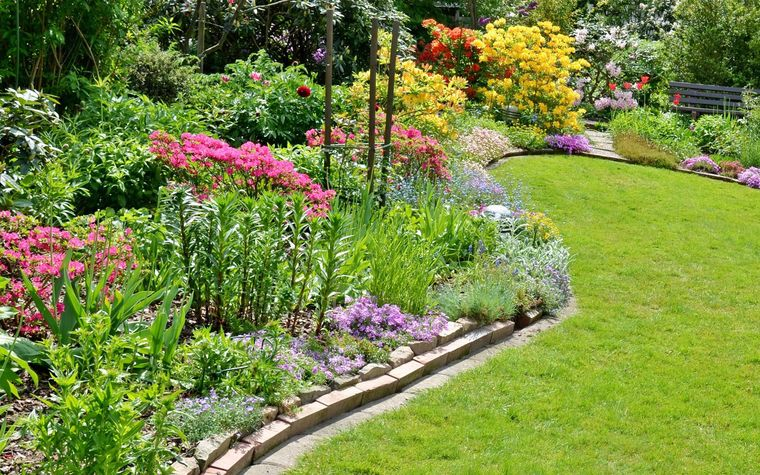
Pflanzarbeiten
Bäume, Sträucher und Beete, fachgerecht nach DIN 18916
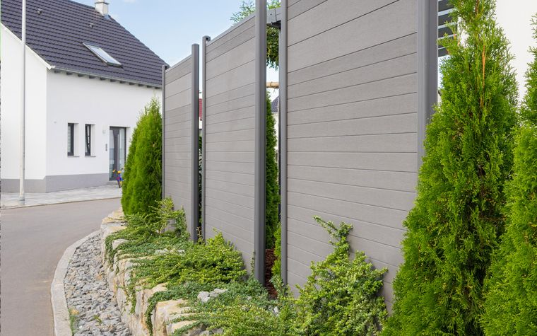
Zaunbau
Stabgitter- und Schmuckzäune in allen Größen, Tore, Reparaturen
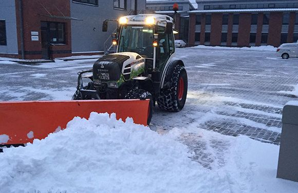
Winterdienst
Räumen und Streuen für Wohnanlagen, Gewerbe und Privathaushalte
Für Gemeinden, Betriebe und Wohnanlagen
Grünflächen, Bäume und Wege, auf die sich Verwaltungen, Firmen und Hausverwaltungen verlassen können.
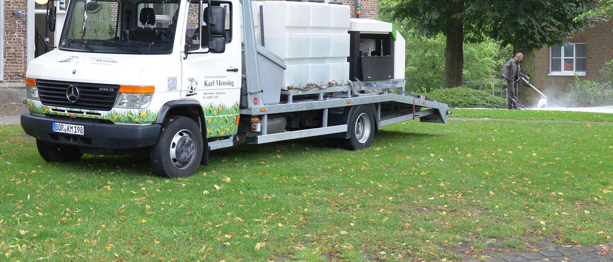

Grünflächenpflege
Mähen, Rasenkanten abstechen, Beete frei halten, Grünschnitt abfahren
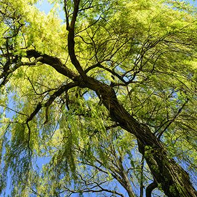
FLL-Baumkontrolle
Regelkontrolle durch zertifizierten Baumkontrolleur nach FLL-Richtlinien
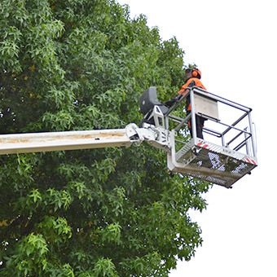
Baumpflege und Fällung
Kronenpflege, Einkürzung, Problembäume, Rodung
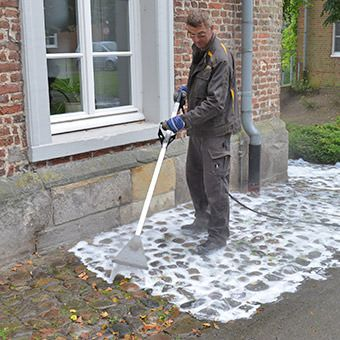
Wildkraut ohne Herbizide
Foamstream, Wildkrautbürste und Wildkrautegge für Pflaster und Wege
Spielplatzkontrolle
Jährliche Hauptinspektion nach DIN EN 1176-7
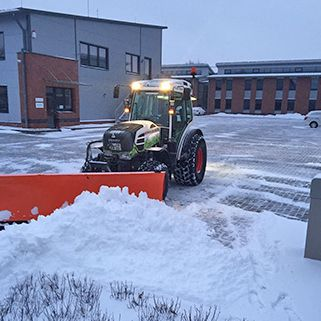
Winterdienst
Schneeräumen und Streuen für Wohnanlagen, Gewerbeobjekte und private Haushalte
Projekt: 300 m² Terrasse im AquAhaus Ahaus
Von der Unterkonstruktion bis zur fertigen Fläche, gebaut von unserem Team.

Unterkonstruktion 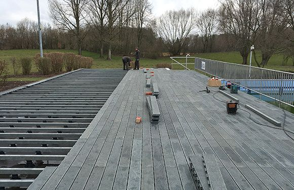
Belag wird verlegt 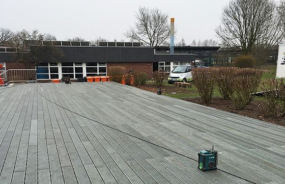
Fertige Fläche
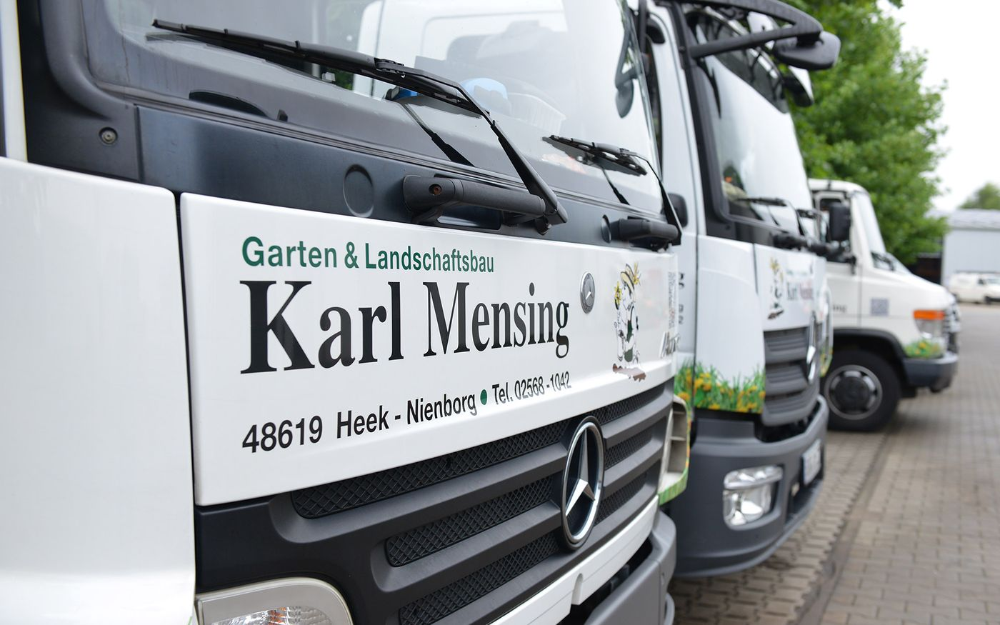
Eigener Maschinenpark
Zwei Teupen-Hubarbeitsbühnen, Fendt-Schlepper, Kubota-Rasentraktoren, Baumstumpffräse, Holzhacker, Foamstream und eine Drohne: Was wir für die Arbeit brauchen, steht bei uns auf dem Hof.
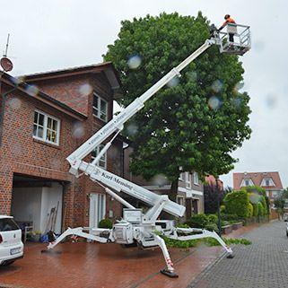
Teupen Leo 24 GTHubarbeitsbühneDatenblatt Teupen Leo 24 GT (PDF) Vermeer SC 60 TXBaumstumpffräseDatenblatt Vermeer SC 60 TX (PDF)
Vermeer SC 60 TXBaumstumpffräseDatenblatt Vermeer SC 60 TX (PDF)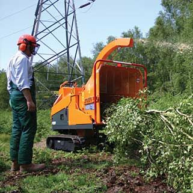
Jensen A 231HolzhackerDatenblatt Jensen A 231 (PDF)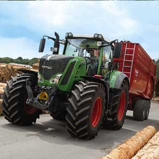
Fendt Vario 800SchlepperDatenblatt Fendt Vario 800 (PDF)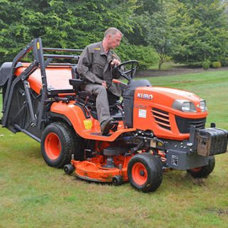
Kubota G26Rasentraktor mit Hochentleerung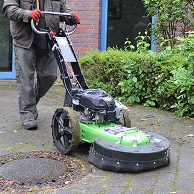
Unkrautbienemit Bürstenköpfen
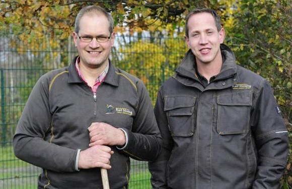
Inklusion ist bei uns selbstverständlich
Seit dem 1. Oktober 2010 gibt es bei uns eine Inklusionsabteilung in der Grünflächenpflege. Hier arbeiten Menschen mit Behinderung fest im Team, mit einem ganz normalen Arbeitsplatz.
- 2010gegründet am 1. Oktober
- 7Beschäftigte mit Behinderung
Die einen klagen über Fachkräftemangel, die anderen tun sich schwer mit den Bedingungen eines freien Arbeitsmarktes. Was auf den ersten Blick unvereinbar scheint, kann ein Modell mit Vorbildfunktion sein.
Wir stellen ein
Gärtner/in im Garten- und Landschaftsbau
Zur Verstärkung unseres Teams suchen wir eine Gärtnerin oder einen Gärtner der Fachrichtung Garten- und Landschaftsbau.
Das bringen Sie mit
- Berufserfahrung im Garten- und Landschaftsbau
- Zuverlässigkeit
- engagierte und selbstständige Arbeitsweise
- Teamgeist
- Führerschein Klasse B/BE
Das erwartet Sie
- Ein Team von 40 Leuten in einem Familienbetrieb seit 1952
- Abwechslung: Privatgärten, Gemeinden, Bäume, Pflaster, Winterdienst
- Moderne Maschinen von Fendt, Kubota, Teupen und Vermeer
- Zusammenhalt: Sieger beim Stadtradeln der Gemeinde Heek 2021 und 2022
Ihr Ansprechpartner: Karl Mensing, Geschäftsführer. Lieber per Mail? info@gartenbau-mensing.de
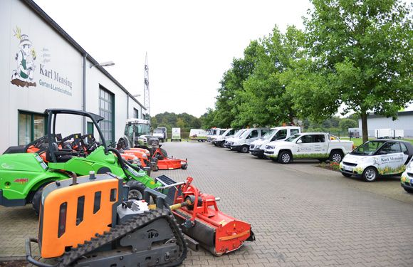
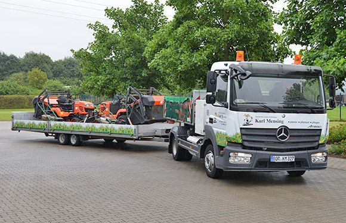
Seit 1952 in Familienhand
Gegründet am 1. Oktober 1952 von Karl Mensing senior und Maria Mensing. Heute führen Karl und Philipp Mensing den Betrieb an der Gartenstraße in Nienborg.
- 1952Firmengründung
- 40Mitarbeiter
- 1AService
 Karl MensingGeschäftsführerKarl Mensing mobil anrufen: 0172 2801552
Karl MensingGeschäftsführerKarl Mensing mobil anrufen: 0172 2801552 Philipp MensingGeschäftsführerPhilipp Mensing mobil anrufen: 0151 16502300
Philipp MensingGeschäftsführerPhilipp Mensing mobil anrufen: 0151 16502300 Doris MensingBuchhaltungDoris Mensing mobil anrufen: 0173 5665071
Doris MensingBuchhaltungDoris Mensing mobil anrufen: 0173 5665071
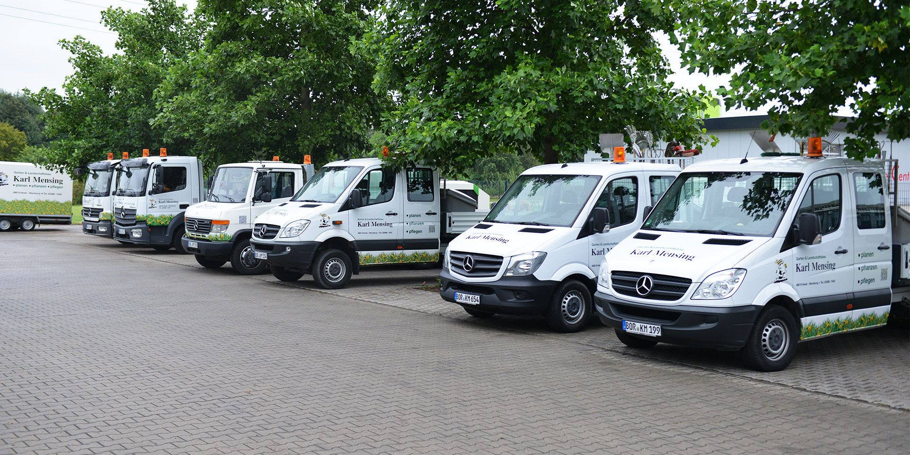
Neuigkeiten
Messen, Auszeichnungen und was sonst bei uns los ist.
2023
LWL-Messe der Inklusionsunternehmen in Dortmund
Mit eigenem Stand dabei. Zur Inklusionsabteilung
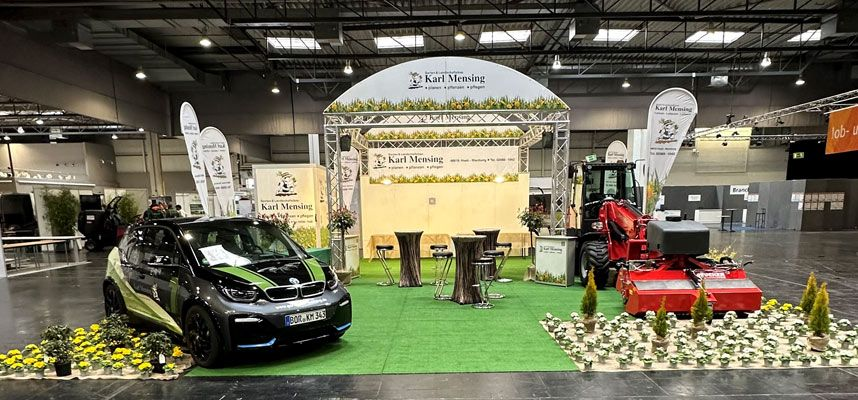
2021/22
Sieger beim Stadtradeln der Gemeinde Heek
Zweimal in Folge vorn.
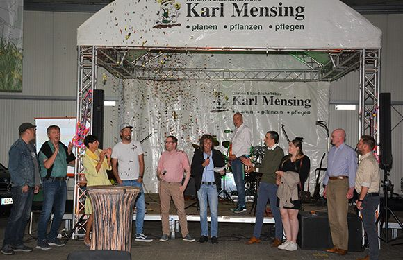
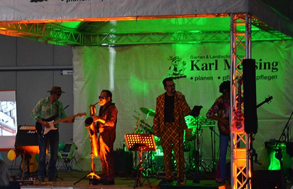
2018
Foamstream’s Global Testimonial Video
Der Hersteller Weedingtech zeigt Foamstream im Einsatz. Video auf YouTube ansehen
2017
LWL-Messe der Inklusionsunternehmen in Münster
Mit Hubarbeitsbühne und Firmenwagen am Stand.
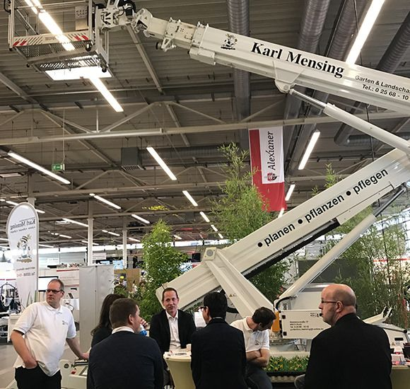
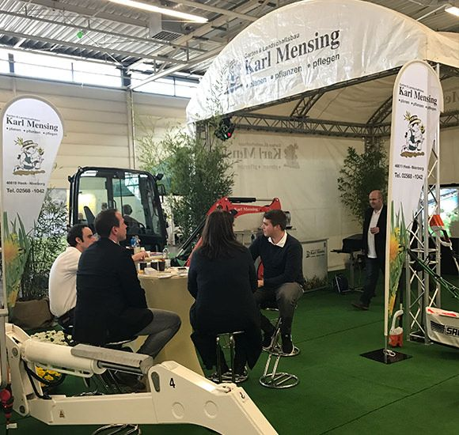
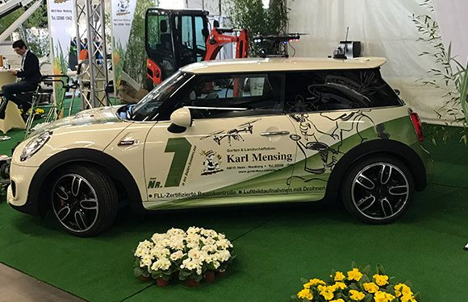
2017
Rosenmontagsumzug in Ahaus-Wüllen
Unser Unimog zieht den Wagen.
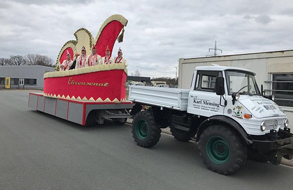
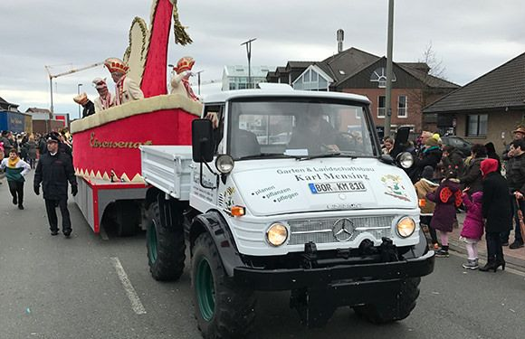
Saisonkalender: Was jetzt dran ist
Ein kleiner Wegweiser durchs Gartenjahr. Der aktuelle Monat ist schon aufgeschlagen.
November
Kurz fragen, ob es passt: 02568 1042
Im eigenen Garten
- Bäume und Sträucher pflanzen
- Bäume fällen, Wurzelstock fräsen lassen
- Laub und Grünschnitt abfahren
Für Gemeinden und Betriebe
- Gehölzpflege mit Hubarbeitsbühne
- Winterdienst
- Baumkontrolle im unbelaubten Zustand
Hecken und Gehölze stark zurückschneiden oder roden: nach § 39 Bundesnaturschutzgesetz nur vom 1. Oktober bis Ende Februar.
Anfrage
Sagen Sie kurz, worum es geht. Wir melden uns und kommen bei Bedarf zum Ortstermin.
- Montag bis Freitag, 8 bis 17 Uhr
- info@gartenbau-mensing.de
- Fax 02568 388405
- Gartenstraße 3a, 48619 Heek-Nienborg
Route in Google Maps